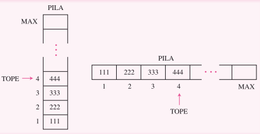

Estructuras de datos lineales
Pilas
una pila es una estructura de datos lineal en la cual se puede agregar o quitar elementos por alguno de los dos extremos de la pila. Por lo que una pila se elimina en el orden inverso al que se insertaron los datos, en pocas palabras el ultimo elemento que se ingreso en la pila es el primero que se saca por lo tanto este tipo de característica se le conoce como de tipo LIFO
Otra definición de una pila es que son una estructura de datos lineales, como arreglos, ya que los componentes ocupan lugares sucesivos en la estructura cada uno de ellos tiene un único sucesor y predecesor con la excepción de el ultimo y el primero, respectivamente.
Representación de una pila:
Las pilas en este caso no son estructuras de datos fundamentales, esto porque este tipo de estructura no es que este definida en algún lenguaje de programación por lo que para lograr hacerla se necesita de otros algoritmos para poder llegar a el resultado al igual que para representarla se necesita el uso de otras estructuras de datos:
Arreglos y listas.

OPERACIONES CON PILAS:
- Push (Insertar): agregar un elemento al final de la pila.
- Pop (Eliminar): Leer y eliminar un elemento final de la pila.
Bootstrap v5.1.3